"
追突事故後の頭痛が、
3週間でほぼ消えました
信号待ちで追突され、首と頭の重さが続いていました。病院では「異常なし」と言われ不安でしたが、こちらで丁寧に診ていただき、保険手続きも全て任せられて本当に助かりました。
A.K さん
30代 女性 / 会社員
むちうち・首の痛み・頭痛・しびれ──事故後の不調は 放置すると慢性化 します。 神戸市中央区の笹井整骨院では、国家資格者が一人ひとりに合わせた施術で、根本改善まで丁寧にサポートします。
受付時間 9:00–20:00／土日祝も診療／三宮駅 徒歩5分
一つでも当てはまる方は、お早めにご相談ください。事故後の不調は時間が経つほど慢性化します。
事故直後は痛みを感じにくく、数日後に悪化するケースが多発
自律神経の乱れが原因のことも。早期の施術が重要です
神経への影響が疑われます。放置せず専門家へ
骨に異常がなくても筋肉・靭帯損傷の可能性
手続き・転院・慰謝料についても丁寧にサポート
夜間・土日祝も対応。通いやすさにこだわります
数ある整骨院の中から、神戸の事故後ケア専門院として選ばれ続ける理由をご紹介します。
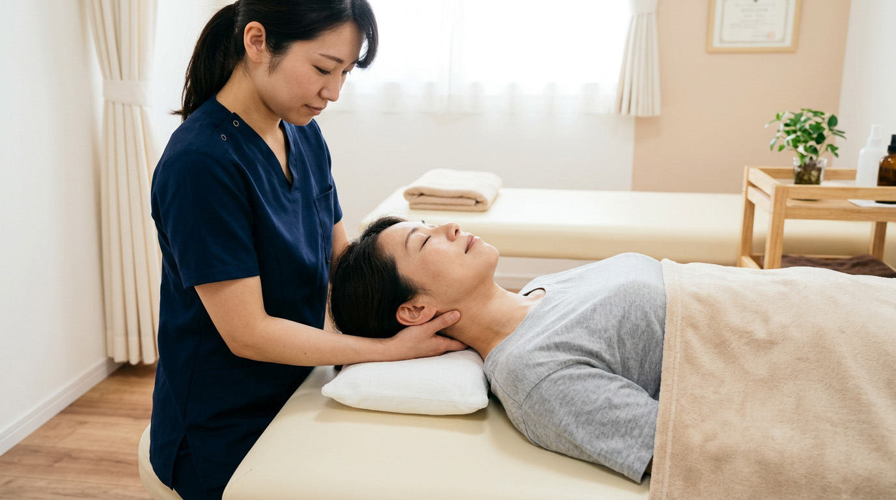
むちうちは見た目で分からない損傷が起きやすく、専門知識がないと適切な施術ができません。当院は開院以来17年間、交通事故後の症状に特化してきた経験があります。レントゲンに写らない筋・靭帯・自律神経のダメージまで丁寧に評価します。
交通事故によるケガの施術費は、自賠責保険が適用され患者様の自己負担は原則0円です。慰謝料(1日4,300円)も別途請求が可能。複雑な手続きも、当院スタッフがすべてサポートします。
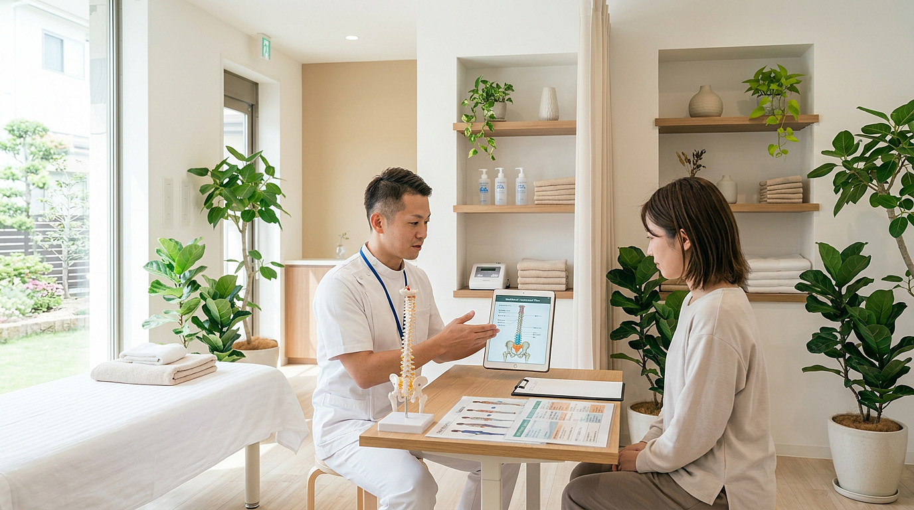
在籍するスタッフは全員、厚生労働省認定の柔道整復師。年齢・体格・お仕事の内容まで考慮し、手技を中心にした優しい施術で根本改善へ導きます。痛みの強い方には電気・温熱療法も併用します。
事故後は継続した通院が重要ですが、忙しい毎日では難しいもの。当院は平日 夜20時まで、土日祝も診療しています。三宮駅から徒歩5分、提携駐車場も完備で、お車での来院も可能です。
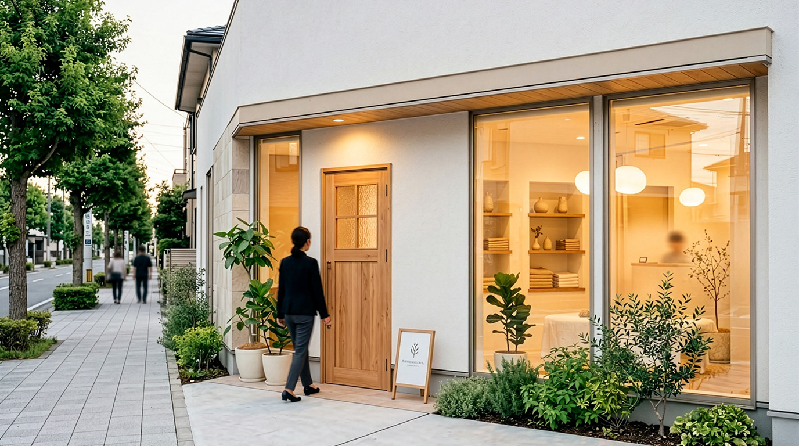
保険会社への連絡、転院手続き、慰謝料請求まで、当院が経験豊富なスタッフが代行・アドバイス。難しいケースには提携の交通事故専門弁護士をご紹介できます(無料相談)。
LINE・お電話・WEBから24時間受付。当日のご予約も可能です。
ご来院から施術完了まで、安心して通っていただける5ステップ。
お電話・WEB・LINEからご予約ください。事故の状況を簡単にお伺いし、保険会社への連絡が必要な場合はその場で説明いたします。
事故の状況、現在の症状、お仕事や日常生活への影響まで、20分ほどかけて丁寧に伺います。保険手続きの不安もここでお気軽にご相談ください。
国家資格者が姿勢分析・関節可動域・筋緊張をチェック。レントゲンでは見えない筋肉・靭帯のダメージまで確認します。
検査結果をもとに、お一人おひとりに最適な施術プランをご提案。納得いただいた上で、手技・電気療法・温熱療法を組み合わせた施術を行います。
ご自宅でのセルフケア指導・通院ペースのアドバイスをお伝えします。継続通院で根本改善を目指しましょう。
明るく清潔な院内で、リラックスして施術を受けていただけます。
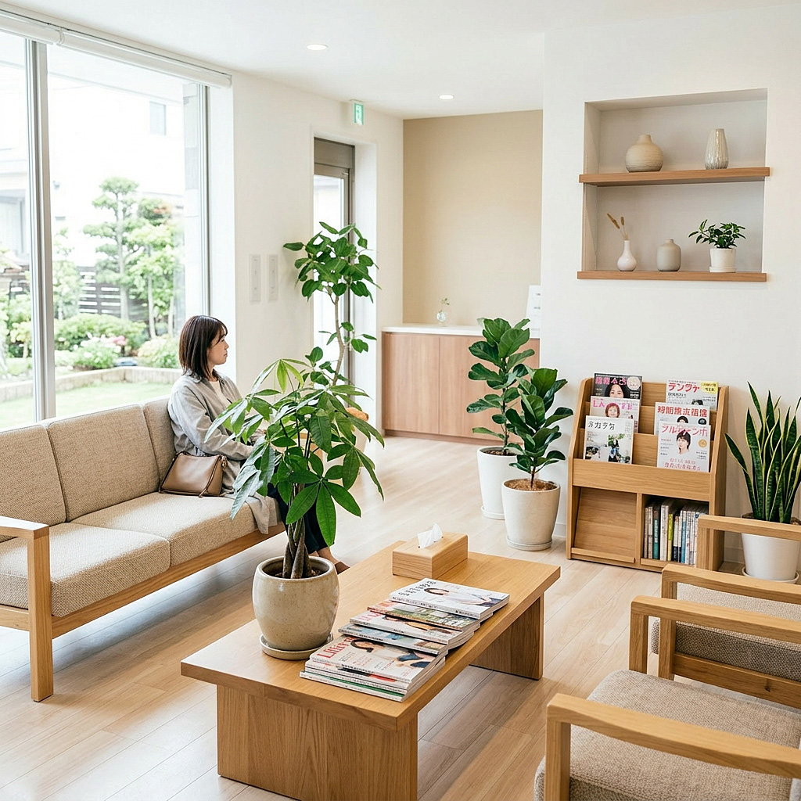
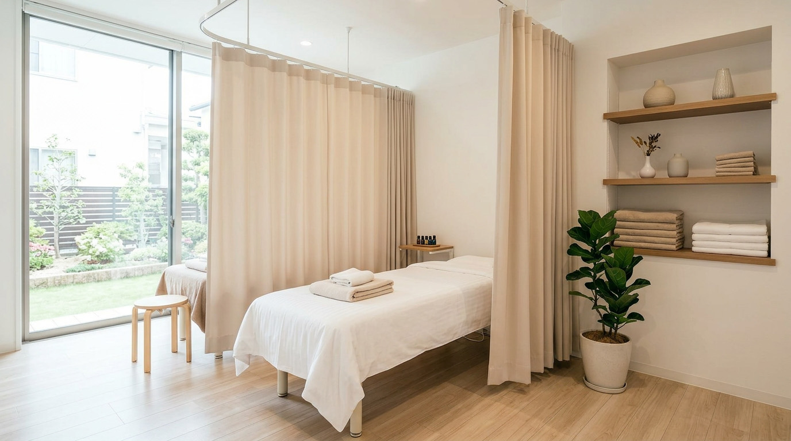
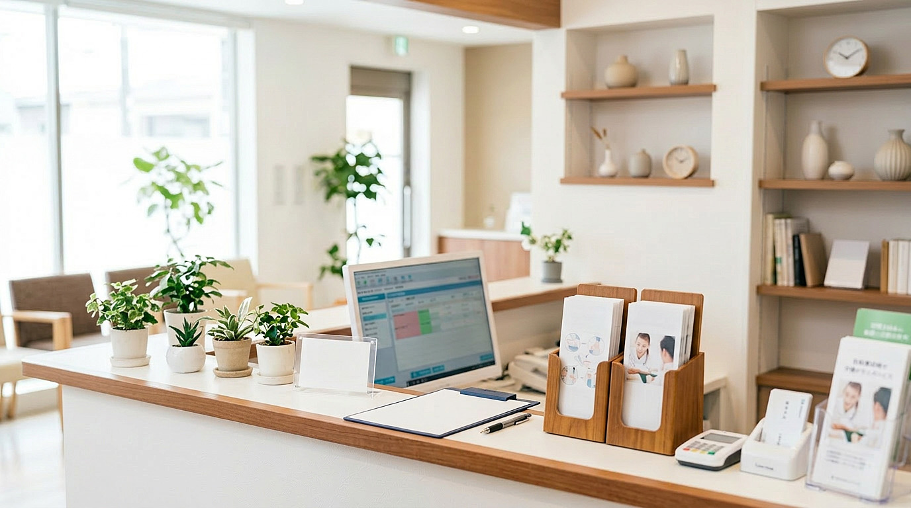
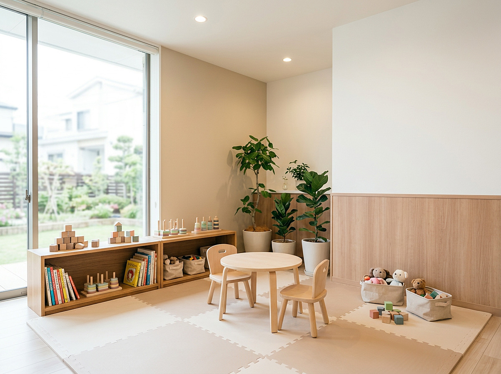
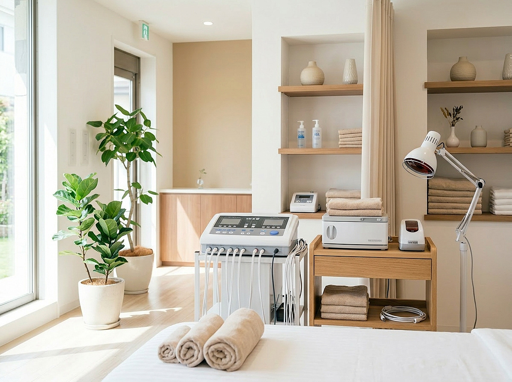
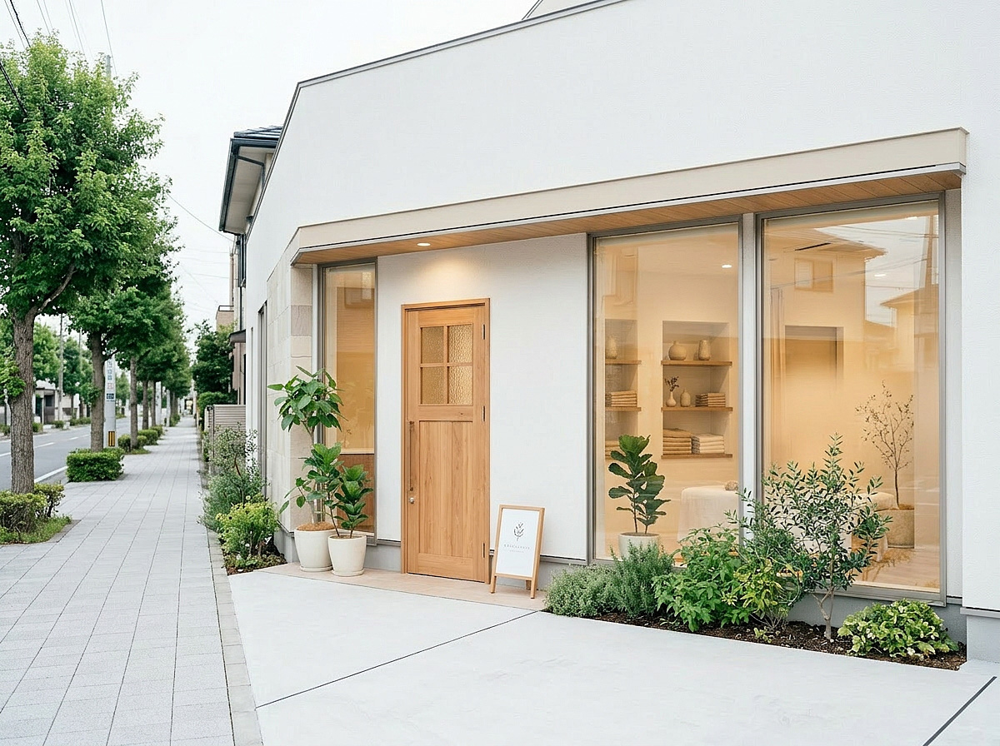
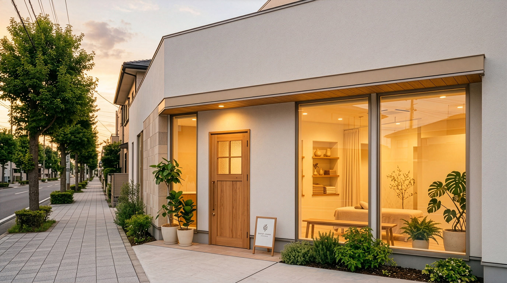
「今通っている整骨院で改善しない」「もっと専門的に診てもらいたい」── 転院手続きは当院がすべてサポートします。
施術費は加害者の自賠責保険から支払われるため、患者様の窓口負担は原則 0 円。慰謝料も別途請求可能です。
| メニュー | 料金（税込） |
|---|---|
| 初診料 | ¥3,300 |
| 一般施術（30分） | ¥4,400 |
| 骨盤矯正（45分） | ¥6,600 |
| スポーツ整体（60分） | ¥8,800 |
| 回数券（10回） | ¥39,600¥44,000 |
※ 学生割引・ご家族割引もございます。詳しくは受付までお問い合わせください。
症状・保険の種類・通院頻度を選ぶと、料金の目安をすぐに確認できます。
実際に通院された方からの声をご紹介します。
信号待ちで追突され、首と頭の重さが続いていました。病院では「異常なし」と言われ不安でしたが、こちらで丁寧に診ていただき、保険手続きも全て任せられて本当に助かりました。
前に通っていた接骨院では待ち時間も長く改善も見られず…。夜20時まで対応していると知って転院。保険会社への連絡まで対応してくれて、本当に助かりました。

事故から数週間経って手にしびれが出始め不安でした。先生が原因をきちんと説明してくれて、自宅でのケアも教えてもらえたのが心強かったです。半年通って、すっかり元通りです。
※ 個人の感想であり、症状の改善には個人差があります。
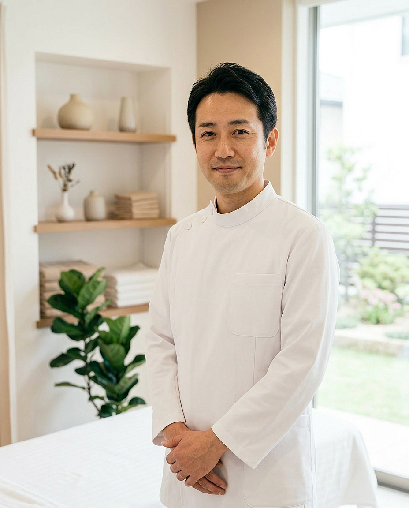
はじめまして、笹井整骨院 院長の笹井 望です。当院は2008年の開院以来、神戸市中央区で17年間、地域の皆様の身体と向き合ってまいりました。
特に交通事故後の不調は「外から見えない痛み」がほとんど。患者様ご自身も気づかないうちに後遺症が残ってしまうケースを、多く目にしてきました。だからこそ私たちは、最初の問診で時間をかけて症状を伺い、お一人おひとりに合わせた施術計画を立てています。
また、保険会社とのやり取りに悩む方も多くいらっしゃいます。手続きや費用のことで不安を感じる必要はありません。当院のスタッフがすべてサポートいたします。「ここに来てよかった」と思っていただけるよう、スタッフ一同 全力でお迎えします。
はい、交通事故によるおケガの場合、施術費は加害者側の自賠責保険から支払われます。患者様の窓口負担は原則として0円です。保険手続きの方法も、当院スタッフが丁寧にご説明します。
可能です。整形外科で月1〜2回の経過観察を続けながら、当院で施術を受けるという併院パターンが多くの患者様に選ばれています。当院での施術内容も、ご希望があれば病院の主治医にお伝えします。
転院は患者様の権利として認められています。保険会社への連絡が必要ですが、当院がすべて代行いたしますのでご安心ください。これまで多くの方の転院対応をしてまいりました。
症状の程度によりますが、事故直後は週3〜4回、症状が落ち着いてきたら週1〜2回が目安です。患者様の症状とライフスタイルに合わせて、無理のないプランをご提案します。
事故から2週間以内のご来院が望ましいですが、それ以降でも対応可能なケースがあります。まずは無料相談にてご状況をお伺いさせてください。早めにご連絡ください。
| 時間 | 月 | 火 | 水 | 木 | 金 | 土 | 日祝 |
|---|---|---|---|---|---|---|---|
| 9:00–13:00 | ● | ● | ● | ／ | ● | ● | ● |
| 15:00–20:00 | ● | ● | ● | ／ | ● | 〜18時 | 〜17時 |
休診日：木曜日／祝日は日曜と同じ診療時間です。
電話・WEB どちらからでも、24時間ご相談を受け付けています。
当日のご予約も可能です。